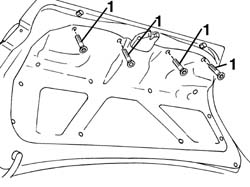
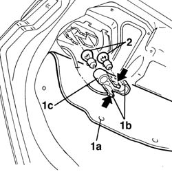
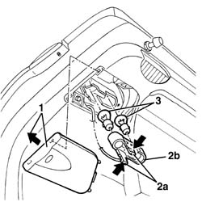

5540A78 tail-light - r r
- Path
- Procedures > 55 ELECTRICAL EQUIPMENT > 5540 EXTERIOR LIGHTING > 5540A lighting > 5540A78 tail-light - r r
- Kind
- repair procedure (removal / refitting; the operation number is the code)
- Applies to
- all engines; all production periods
- Interactive page
- https://sloeber94.github.io/elrnDB-a156/en/#/3238441
Applies to: all engines; all production periods
 Removing
Removing
 Refitting
Refitting1. Open the boot lid and undo the bolts fixing the inner lining.

Applies to: all engines; all production periods
1. Lower the inner trim (1a), act on the retaining springs (1b) and extract the bulb holder (1c).
2. Remove the bulbs from the bulb holder.
Bayonet fitting

Applies to: all engines; all production periods
Refitting
RemovingCheck the operation of the bults.
Refit the bulbs in the bulb holder.
Fit the bulb holder and engage the retaining springs.
Reposition the inner trim and fasten it using the bolts.
Check the operation of the reversing lights and the rear fog lamps.
Applies to: all engines; all production periods; only with equipment: Station Wagon
Removing
RefittingOpen the tailgate.
1. Release the cover, moving it in the direction of the arrow.
2. Act on the retaining springs (2a) and extract the bulb holder (2b).
3. Remove the bulbs from the bulb holder (bayonet fitting).

Applies to: all engines; all production periods; only with equipment: Station Wagon
Refitting
RemovingCheck the operation of the bulbs.
Refit the bulbs in the bulb holder.
Place the bulb holder in position and engage the retaining springs.
Check the operation of the reversing lights and the rear fog lamps.
Refit the cover.